Cinco etapas cerradas visualmente. Identificador de inventario: C08.
1. Planta y calle — Cierre anterior conservado con su propia evidencia.
2. Banquetas y esquinas — Cierre anterior conservado con su propia evidencia.
3. Edificios y volúmenes — Se conservan las cinco plantas. C2-01 mantiene un nivel; C2-02 y el cuerpo interior C2-03 reciben alturas visuales diferenciadas. OB-01 y OB-02 conservan su reconstrucción anterior.
4. Fachadas y acabados — Paños grises con marcos pardos en la esquina, frente azul claro hacia Sufragio, puertas y rejas; cuerpo interior sin ventanas supuestas. Muros sin techo alrededor del estacionamiento.
5. Equipamiento y cierre — Barandilla azul junto a la rampa, cerramiento oeste y fachada histórica sur con acceso abierto. Patio y calles libres; detalles agrupados por material.
Antes y después de la tanda
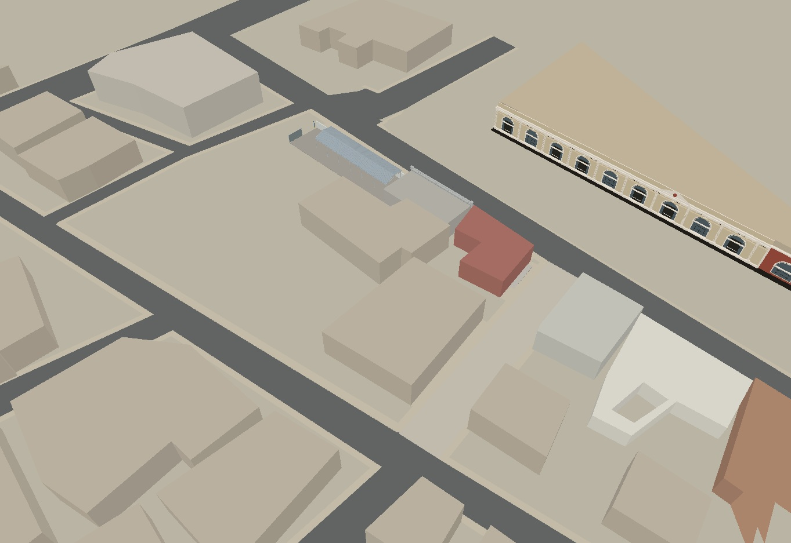
Antes · cuadra
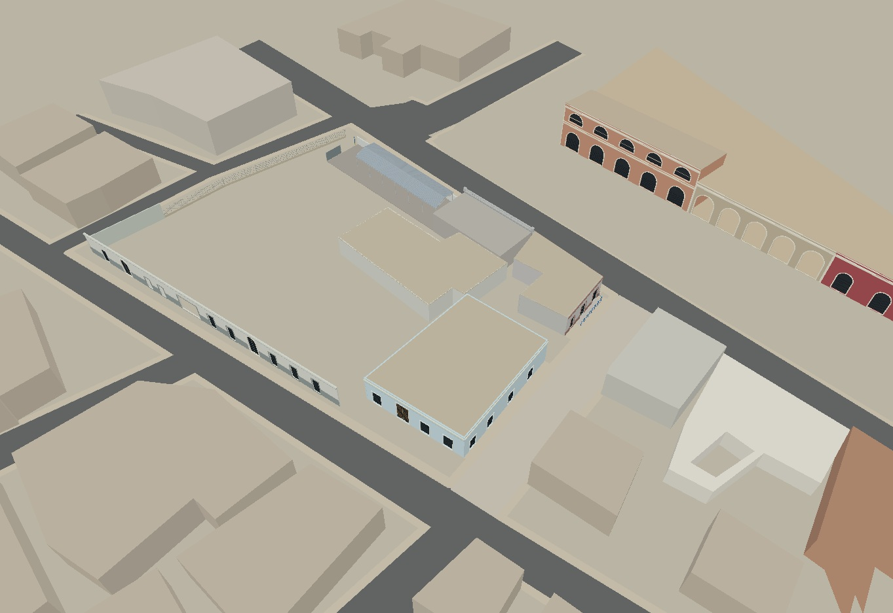
Despues · cuadra
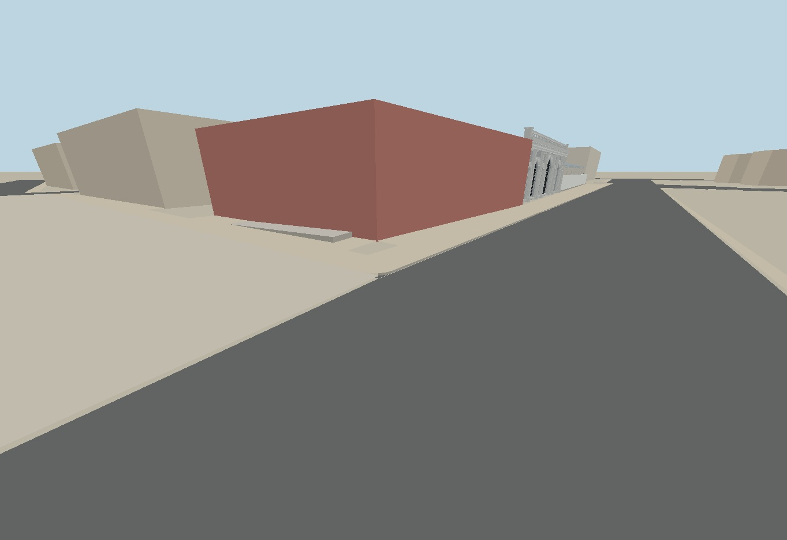
Antes · NE
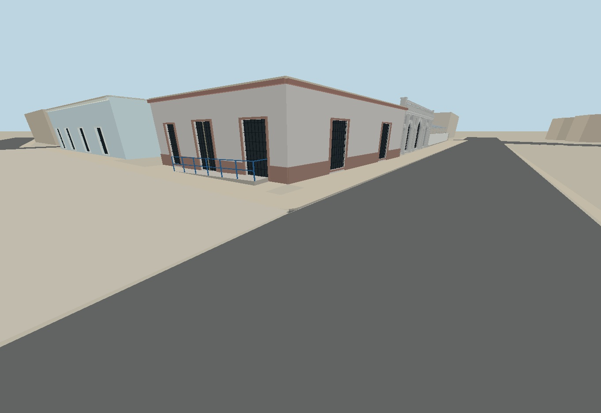
Despues · NE
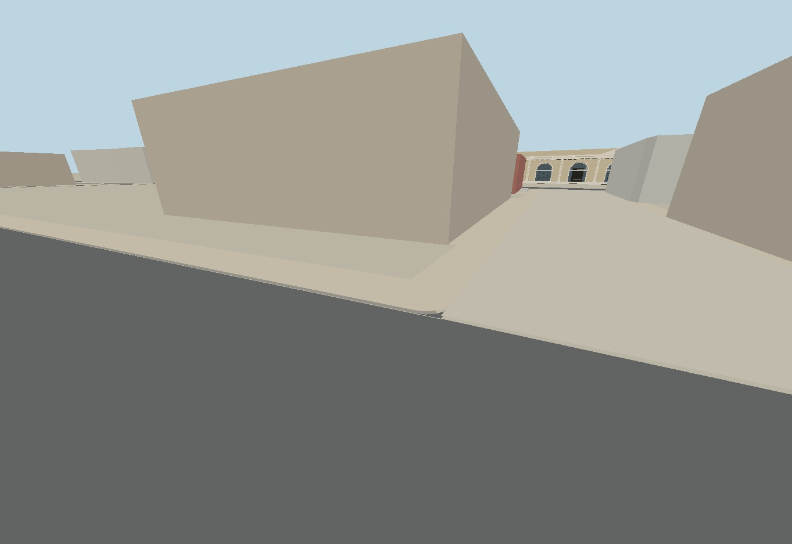
Antes · SE
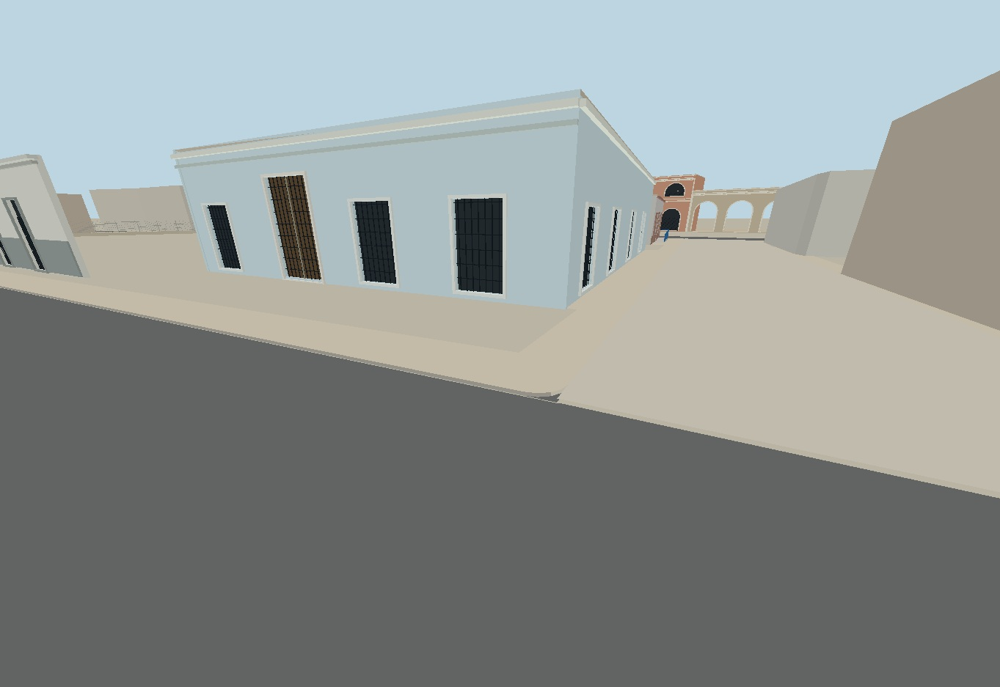
Despues · SE
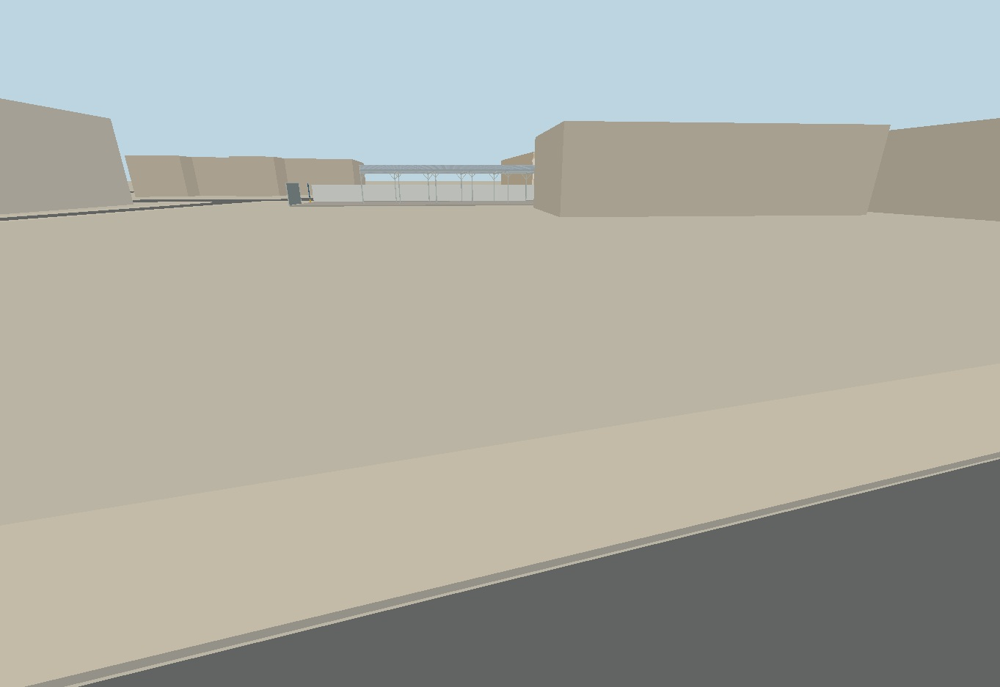
Antes · sur
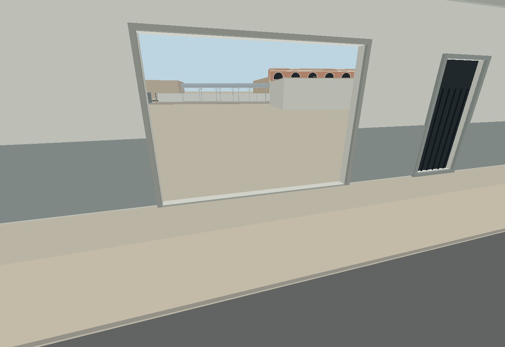
Despues · sur
Cámaras idénticas entre modelo anterior y posterior. La comparación con las fotografías es visual y aproximada; las imágenes no son un levantamiento métrico.
Referencias conservadas
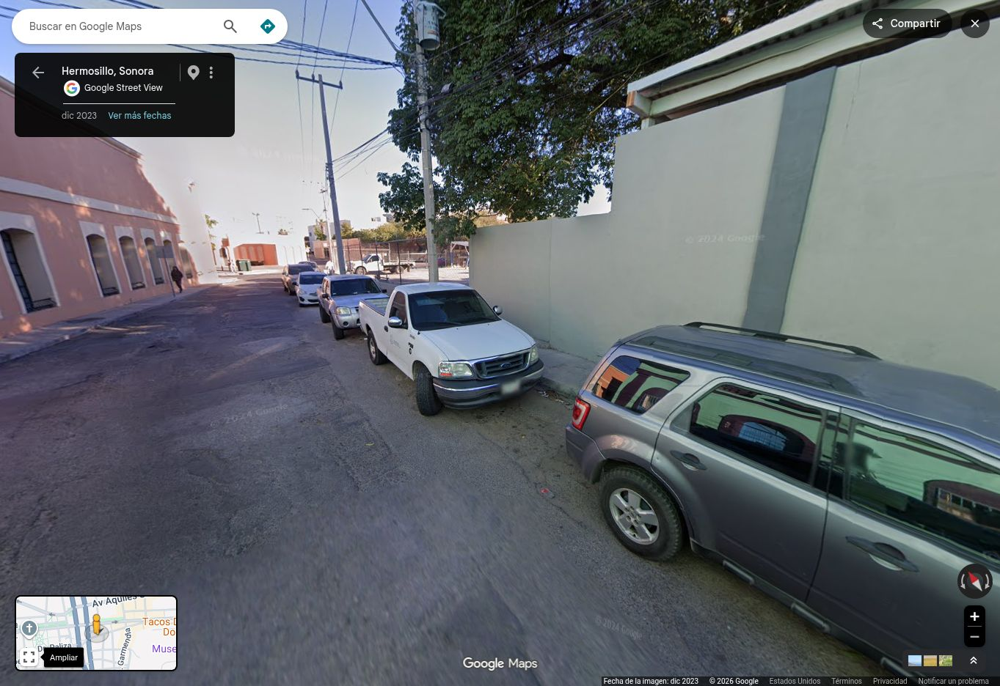
Oeste · dic 2023
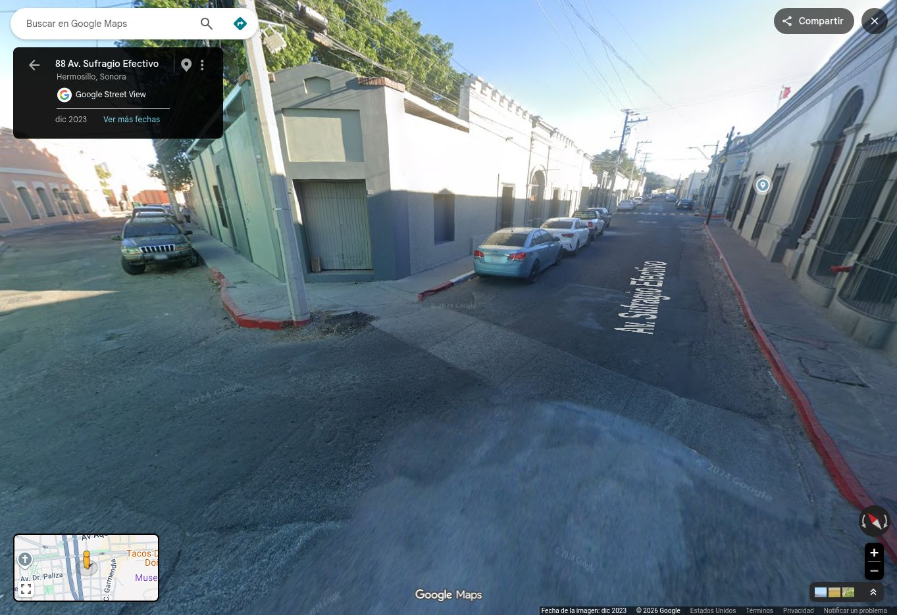
SW · dic 2023SE · dic 2023NE · dic 2023
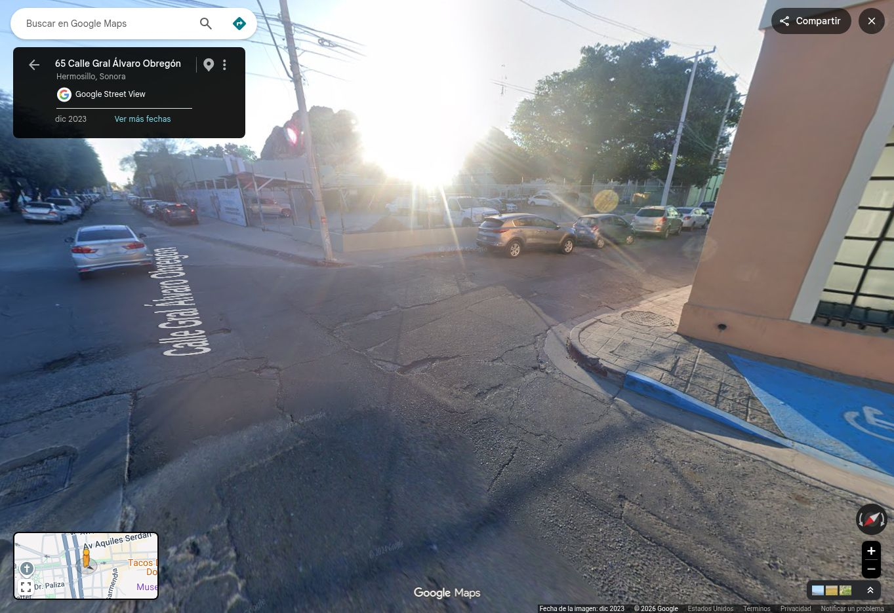
NW · dic 2023Acceso · dic 2023
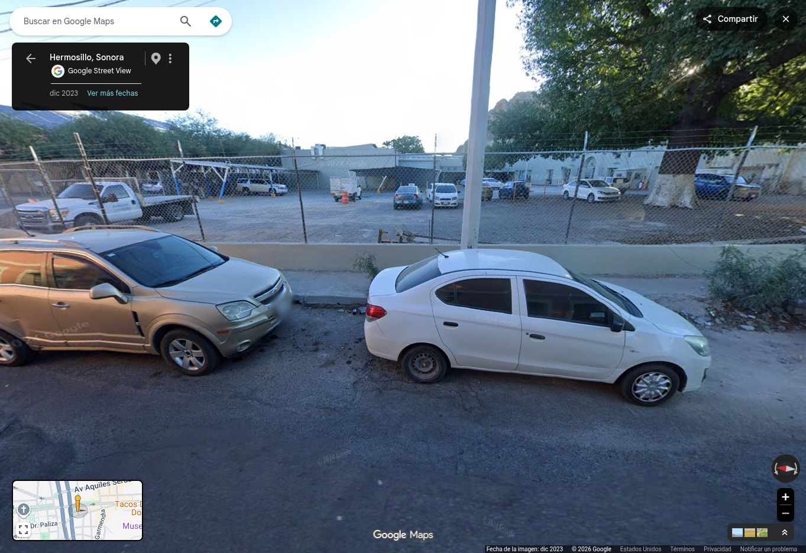
Porton · dic 2023
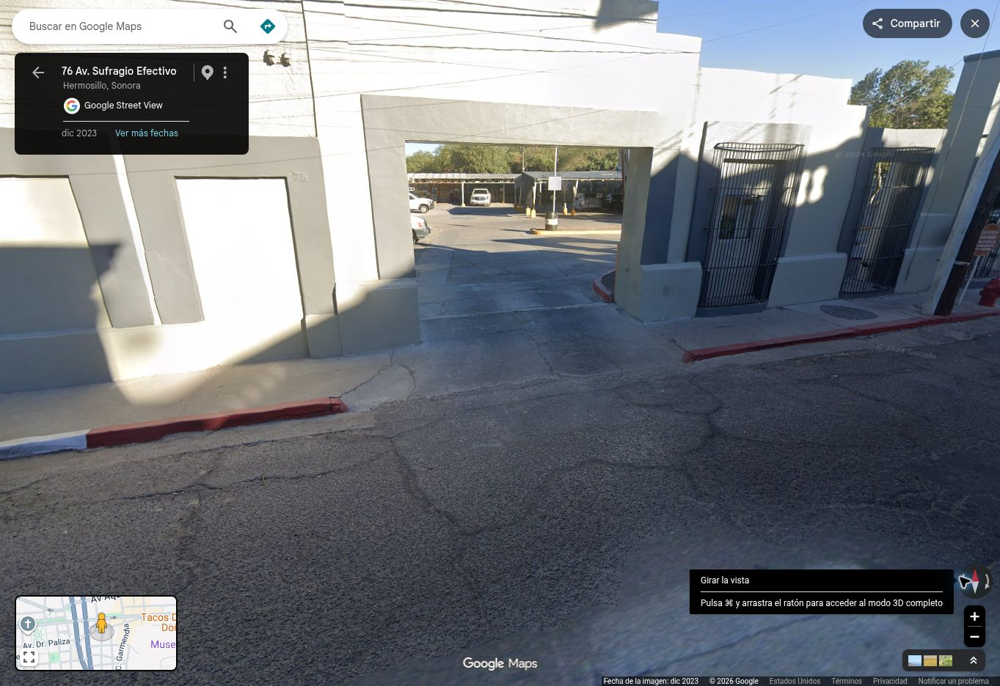
sur-cerramiento · dic 2023
Límites del cierre
Cierre visual aproximado, no levantamiento topográfico ni restitución métrica.
Street View: diciembre de 2023; no acredita cambios posteriores.
Cotas y ejes de vanos se interpretan visualmente. Cámaras de contraste aproximadas, no calibración fotogramétrica.
Fachadas ocultas, interiores, anuncios, instalaciones y detalles ornamentales finos no se restituyen.
Los nombres heredados del inventario no certifican ocupante, propiedad ni uso actual.